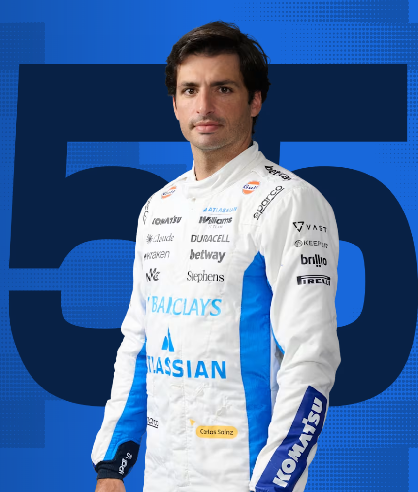
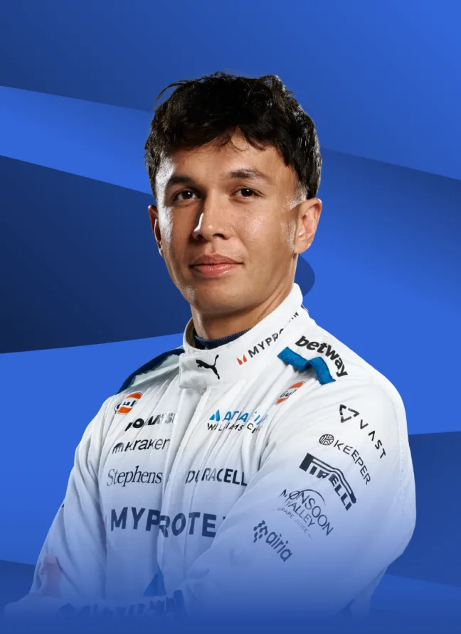

Carlos Sainz Jr. is one of the most complete drivers in Formula 1. The son of rally legend Carlos Sainz, he made his debut in 2015 with Toro Rosso and spent a decade steadily climbing the grid, racing for Renault, McLaren, and Ferrari before joining Williams in 2025. His impact was immediate — he dragged the team to podiums in Azerbaijan and Qatar and transformed the culture around Grove overnight. Smart, smooth, and supremely consistent, Sainz brings a level of experience and professionalism that Williams have been missing for years.

Alex Albon
Alex Albon has become one of the most respected drivers on the grid through sheer resilience. The Thai-British driver made his debut in 2019 with Toro Rosso and was promoted to Red Bull mid season, where he performed solidly before being dropped at the end of 2020. He spent 2021 as a test driver before Williams gave him a second chance in 2022 — and he has never looked back. Consistently extracting the maximum from the car, Albon has been Williams' rock and his partnership with Sainz has been one of the more effective in the paddock.

Driver History
Williams have had some of the greatest drivers in Formula 1 history behind their wheel. Alan Jones won the first title in 1980. Keke Rosberg won in 1982 in one of the most competitive fields the sport had seen. Then came the 1980s and 90s dynasty — Nelson Piquet, Nigel Mansell, Alain Prost and Damon Hill all won championships with Williams. Jacques Villeneuve claimed the last in 1997. The tragic death of Ayrton Senna at Imola in 1994 in a Williams remains one of the darkest days in the sport's history. After years of struggle, the arrival of Sainz in 2025 feels like the beginning of a new chapter for one of F1's most historic teams.